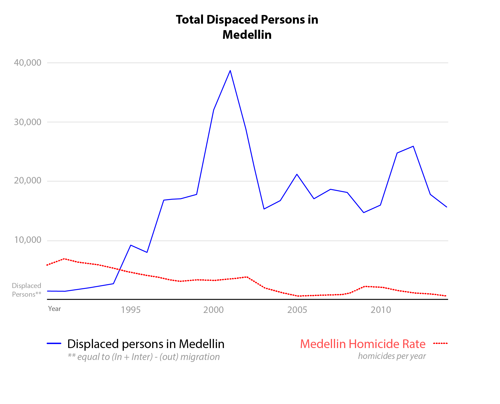

View of the Aburrá Valley and city of Medellín
Source: Pinsdaddy
Source: Pinsdaddy
Introduction
Medellin is a city shaped culturally and physically by conflict. This project attempts to understand three primary questions. The first is what the migration patterns of conflict related IDPs (Internally Displaced Persons) into, within, and out of Medellin are; and whether this conflict migration played an important part in Medellin’s overall growth from the late 1980s to the mid 2010s. The second is how this population increase impacted the growth and development patterns of the city of Medellin, specifically the cities sprawl up the steep slopes surrounding the valley, and increased patterns of informality. Finally, what are the implications of these migration and growth patterns on the people who reside in these informal communities along the periphery, and what is the city doing to assist these residents.
This analysis was conducted in two primary ways. First, in order to understand the migration patterns, an extensive dataset - the Registro Único de Víctimas
1
- was used. This dataset contains the records of those displaced by conflict,
including the origins and destinations of conflict-related migration, throughout Colombia. This allows for comparison
and establishing relationships with major political or conflict related events in the city of Medellin or Colombia at-large. The second part of this analysis uses imagery to understand the growth and development patterns of the city of Medellin, a result of population growth by nearly a million people since the late 1980s.
2
This
relies primarily on two types of satellite imagery. The first is LandSAT data; the second, historical satellite imagery
tool available through Google Earth.The purpose of this project is two-fold. The primary purpose is to understand, even if in a general way, the impact of conflict on migration and population growth in Medellin. This includes the impacts of this migration on the growth and development patterns including sprawl and informality, as well as the cities response to the precarious conditions of residents on steep slopes along the periphery. The second purpose was to experiment with remotely sensed data in order to better understand the benefits and limitations of using this type of technology and techniques for urban planners seeking to answer questions around urban growth patterns. As a result, a significant part of the analysis is explaining the techniques used for the analysis and critically examining the usefulness and limitations of these processes as applied to this project.
Conflict and Migration
The recent history of Colombia, and especially Medellin, cannot be understood without analyzing and understanding the causes and impacts of conflict. The extreme violence that played out as a result of the separatist guerilla movements and later the drug traffickers created immense displacement and migration. Additionally, conflict created ancillary impacts related to urban rural dynamics, political instability, and economic insecurity which caused further displacement and migration.
Using the dataset Registro Único de Víctimas, I was able to aggregate IDPs as a result of conflict into, within, and out of Medellin. The dataset is quite accurate in terms of the data collected, however, it is estimated that perhaps as much as 30 percent of the conflict related displacement is not accounted for within the dataset.
Furthermore, certain limitations related to the dataset include an inability to date some entries, in which case date of displacement was attributed to January of the year. This results in artificial inflations during the first month of each year which makes displaying the data below yearly totals problematic as decisions would have to be made about how to assign these extra January IDPs. Therefore, I made the decision that for my purposes it would be more accurate to display the data as yearly totals. Additionally, although the dataset begins in the mid 1980s, the data becomes more accurate as time goes on. Therefore, I chose to use 1988 as the earliest date for data that I would show in an attempt to present data that was more accurate.
By graphing the data, comparisons can be made between the migration into, within, and out of Medellin to see if patterns emerge. As an additional layer of information, the charts are overlaid with the dates of major events in Medellin, and Colombia at large, in either the conflict or political realm. This is done not to attribute direct causation, but rather to see if any interesting correlation occurred which might warrant additional research outside the scope of this project.
Source: Wesley Rhodes
Data Sources: Registro Único de Víctimas, Medical Examiner's Office https://www.theatlas.com/charts/Syhv4LhXe
CHANGE A second graph was created specifically to understand migration within and out of Medellin. This data was also correlated with homicide rates
obtained through the Medellin medical examiner’s office.Data Sources: Registro Único de Víctimas, Medical Examiner's Office https://www.theatlas.com/charts/Syhv4LhXe
3
Interestingly, the displacement does not seem especially correlated
with homicides, indicating that many additional factors beyond just homicides are influencing displacement. This data was also overlaid with historical
events to see if there is a correlation between the displacements or homicides with major political or conflict related events in Medellin. Here a couple
interesting correlations did emerge. For instance, the homicide rate seems to decrease during the early 2000s with the demobilization of paramilitaries
and election of Mayor Fajardo who pushes for “social urbanism” reforms. However, we also see a spike in displacement within the city during this time,
which is quite interesting. Additionally, homicide and displacement rates spike once again around the end of the 2000s and early 2010s. This seems to
correspond with the extradition of Don Berna and subsequent vie for power over criminal activity in the city.
Source: Wesley Rhodes
Data Sources: Registro Único de Víctimas, Medical Examiner's Office https://www.theatlas.com/charts/Syhv4LhXe
In general, it is important to understand that migration, while not the only cause of growth in Medellin, played an important role in the cities rapid
population increase since the late 1980s. In fact, if conflict related migration out of Medellin is subtracted from conflict migration into the city it
seems to account for nearly 40 percent of all population growth over this time period, bringing approximately another 330,000 people into the city. Additionally,
the displacement of another 80,000 or so people internally within the city may contribute to higher rates of informal development. It’s clear that many
factors influenced Medellin’s overall growth including economic and other forms of migration, but it’s also clear that conflict related migration contributed
significantly to the cities rapid growth and development over the last 25 to 30 years.Data Sources: Registro Único de Víctimas, Medical Examiner's Office https://www.theatlas.com/charts/Syhv4LhXe
Urban Growth and Informality
Now that the general migration patterns have been observed and analyzed the question arises as to how this rapid population increase and high rate of destabilization within the city itself has impacted the overall growth patterns of the city. Specifically, considering the constraints to sprawl which include the presence of steep slopes on nearly all sides of the city, has this growth occurred along the periphery and on these slopes.
This analysis was conducted through the use of satellite imagery to understand the growth and development patterns of the city of Medellin, the result of an increase in population of around a million people since the late 1980s.
4
This relies primarily on two types of satellite imagery.
The first, which allows for analysis, is the use of LandSAT data. The second, which is used more for illustrative purposes, is the use of the historical
satellite imagery tool available through google earth.Mountains of the Aburra Valley constraining Medellin's Sprawl
Source: Equipo Primer Lugar
The image above shows a topography of Medellin, a city built in a valley and constrained on nearly all sides by steep slopes. This topography should limit
the city’s ability to sprawl, and indeed formal development up these steep slopes was generally constrained, however, high rates of informal development meant
that in order to accommodate the rapid growth the city began to sprawl up these slopes through, largely, informal settlements.Source: Equipo Primer Lugar
The map below was created by using a training based classification method to assign each pixel of the LandSAT image as either developed or undeveloped. The change from undeveloped to developed was then calculated and the results were enhanced in Photoshop. This image is an approximation of the additional development and therefore growth pattern of the city from 1987 to 2016. While the accuracy of any individual cell cannot be guaranteed based upon the limitations of the classification system, this type of analysis is quite helpful and relatively accurate for understanding general growth patterns. This is expecially true when looking at larger geographic areas such as an entire city. This analysis becomes much less detailed and therefore accurate as the geography diminishes, largely due to the size limitations of LandSAT images which is one cell for each 30 by 30 meter area.
Urban groth (shown in red) in Medellin since 1987. Most growth has been confined to hillsides on the city's perifery.
Data Source: LandSAT 5 - January, 30 1987. LandSAT 8 Jan 22, 2018
The following animation uses Google Earth historical satellite imagery to understand what this growth looks like on a neighborhood level. It highlights
an areas of informal settlement located on steep a slope. This area is located in the Northeast region of the city which is characterized by high instances of
informal settlements in which many conflict migrants have chosen to locate.Data Source: LandSAT 5 - January, 30 1987. LandSAT 8 Jan 22, 2018
5
Source: Wesley Rhodes
Data Source: Google Earth historical imgaery
Data Source: Google Earth historical imgaery
Implications
The presence of conflict migrants along these steep slopes is problematic because these zones are at high risk to a number of disasters such as floods, and mud slides, as well as poor transportation options and connectivity. In fact, estimates suggest that as many as 180,000 Medellin families live in so-called high-risk zones for these disasters and that as many as 50% of those are victims of conflict-related displacement.
6
In response, the government has been working to address the issue through a combination of education and relocation initiatives. The education initiatives attempt to help residents located in high risk zones understand the risks they may face and even what they might do to better prepare themselves and structures for these pending disasters. More controversial, however, is the city’s plan to impost a greenbelt around the city and permanently displace housing in favor of park space on many steep slopes along the periphery of the city.
7
Map showing tier 1, 2, and 3 zones for redevelopment as greenbelt. Tramo 1 (red) and 2 in (yellow) are already in development.
Source: Public Works Office of Medellin
However, given the fact that many of these residents have previously been forcibly evicted from homes (some multiple times), is further forced displacement a good
option? It is clear that leaving people in areas of high disaster risk can lead to loss of home, property, injury, and even death, and therefore, understandable why
the city might want to create a program of relocation for these families. But is the city taking into the consideration the special status of many of these residents
as victims of conflict, and if so what are they doing to ensure a successful approach? Source: Public Works Office of Medellin
It seems the city may actually be using the greenbelt project as a way to potentially heal some of these old wounds. According to an article in Citiscope, the project seeks to achieve many goals at once. On one hand it seeks to expand the amount of park and recreational space, and create a sort of urban growth boundary around the city. But the project also has several social aims, many specifically aimed to help victims of conflict. These include the provision of places to grow food, upgrades to homes, expansion of public services and transit options, and providing conflict victims with jobs helping to enact the huge project.
8
Typical rendering used by the city to sell the image of the greenbelt. These images stand in stark contrast to the informal communities that currently
exist in some of these areas and who may be displaced to make room for the project.
Source: Yvonne Brandwijk
Of course, it’s always been illegal to develop on these steep slopes, yet newly arriving and displaced residents continue to do so. There’s no guarantee that the greenbelt
will prevent future arrivals from continuing to build in these hazardous areas. However, Eduardo Lodoño–an agricultural engineer with Empresa de Desarollo Urbano, or EDU,
the public agency overseeing development of the Greenbelt plan–thinks that new arrivals will respect the boundary. He says, “If a community realizes that its land is not
just for building on, but that it is also for increasing the quality of life and creating opportunities — for example to grow food — then it will prevent building from
taking place. But then it has to be a place they want to protect; one that gives them a living, makes them happy and offers them a future.”Source: Yvonne Brandwijk
9
Despite the benefits, the city still doesn’t have a plan in place for how to build the type of social housing necessary to provide those they will displace with appropriate accommodation. Furthermore, it doesn’t seem to know what impact displacing people who have been repeatedly victimized and forcibly evicted might have. While it is clear the government has its heart in the right place, they need to do a lot more work with these communities to recognize their special status as victims and migrants before they cause further destabilization. If Medellin hopes to successfully transition these vulnerable populations, they have to find a way to remove them from harm without further disrupting the critical social networks that these families depend on. If they can find a way to be successful, however, it may provide a roadmap for cities around the globe to increase the resilience of informal and vulnerable populations.
Informal settlement dweller, Blanca Serna, who resides on a steep slope in the periphery of the city. Once a victim of conflict and displacement,
Blanca's family now lives off of food they grow in one of the gardens that are part of Medellin's new greenbelt.Source: Stephanie Bakker and Yvonne Brandwijk, Medellín’s
‘Metropolitan Greenbelt’ adds public space while healing old wounds
Please note: footnotes not visible on mobile.
Return to Student Projects